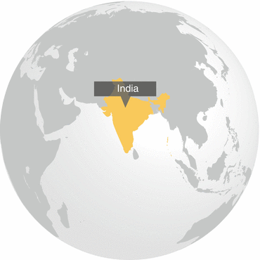
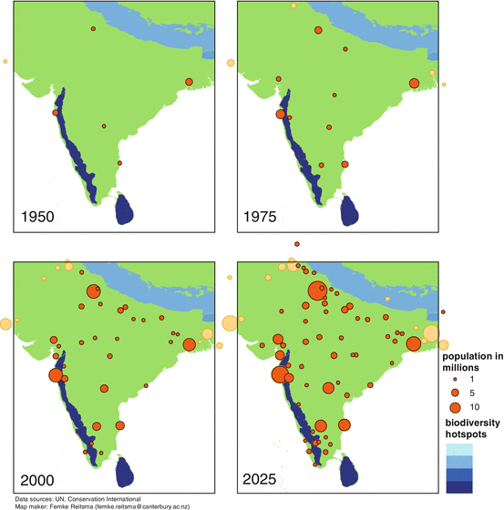

6.1 Introduction
India is increasingly marked by the growing influence of urban areas, with large-scale, distal impacts on rural environments across the country. These changes will impact land cover, natural habitats, biodiversity and the ecosystem services that underpin human well-being.
Until recently, rural development was a major focus in India. This changed in 2005, when the launch of the Jawaharlal Nehru National Urban Renewal Mission shifted the focus to development of 63 urban centers throughout the country. Reforms in India and national policies now treat urbanization as central to economic and industrial development, and there is an explicit strategy to develop cities. One of the largest examples is the developing Mumbai–Delhi industrial corridor, which is approximately 1,500 km long and connects two of the country’s megacities (United Nations Human Settlements Programme (UN-HABITAT)). The government is also establishing special economic zones, industrial and technology parks, and free-trade zones that will further focus urban expansion in specific locations. These urban clusters are likely to transform entire regions, with significant impacts on habitat and biodiversity.
Urbanization has major impacts on rural areas, reshaping lifestyles, livelihoods, and patterns of consumption and waste generation. Demands from urban populations decrease the supply of natural resources in far off areas, and increase pollution within and outside cities. This is often exacerbated by both lack of appropriate policies for managing these effects, and poor regulation and enforcement (Aggrawal and Butsch 2012). Thus, the ongoing and anticipated massive increases in urban population across India are bound to have significant implications for the country’s environment, ecology, society and sustainability.
Urbanization in India also presents opportunities for the environment. For instance, at the national level following promotion of the transition from fuelwood to liquefied petroleum gas for household energy use in cooking, the urban fuelwood demand declined from 30 % of households in 1993, to just 22 % of households in 2005. This has reduced the pressure on forest habitats near urban areas. Cities can also serve as nodes for ecosystem recovery. For instance, in Navi Mumbai, decreased pressure on mangrove forests has lead to a remarkable recovery in the past two decades. In Bangalore, collaborations between municipal government and local communities have led to a growing movement towards the restoration of lakes. In Surat, a focus on integrated waste and sewage management has provided impressive results.
This assessment provides an overview of the environmental and ecological implications of urbanization in India, discussing challenges as well as opportunities for future sustainability.
6.2 Patterns of Urban Expansion: Results from Remote Sensing Studies
Indian cities are expanding in number, density and size (Fig. 6.1). Currently, India’s urban population is around 377 million people, or 30 % of the nation’s total (JNNURM Directorate, Ministry of Urban Development and National Institute of Urban Affairs 2011). By 2031, the urban population in India is expected to nearly double, reaching 600 million people (United Nations 2011). In the past 20 years, the built area in the top 100 cities alone has increased by almost 2.5 fold or over 5,000 km2.

Fig. 6.1
Urban population growth in India (red dots) and the surrounding region (orange dots) 1950–2025 (Prepared by and published with kind permission of ©Femke Reitsma 2012. All Rights Reserved) (Color figure online)
India already contains three of the world’s ten largest cities, Delhi, Mumbai and Kolkata, as well as three of the world’s ten fastest growing cities, Ghaziabad, Surat and Faridabad. Further impacts on ecosystem services, green spaces and connectivity will take place as large and growing cities merge into city clusters (such as Pune-Mumbai). However, about half the country’s urban populations live in smaller urban agglomerations with under 100,000 people.
The development patterns of Indian cities are additionally shaped by their unique history, topography, planning and management. For instance, Pune and Bangalore retain significant green space in the city core despite rapid development and growth due to the presence of institutions such as the military and public sector companies, which protect large green patches.
Urban growth in India is often nucleated, with newly urbanized land usually seen in a tight band around the older parts of the city. In high growth cities like Bangalore and Pune, the city center maintains a fairly steady population because of a scarcity of land, while the city grows outwards, leading to increased fragmentation at the periphery (Taubenböck et al. 2009). In the smaller city of Lucknow, growth is largely in the city core due to infilling, which can lead to greater impacts on biodiversity in the center of the city, and can impede species movements through the urban landscape (Schneider and Woodcock 2008).
6.3 Impacts on Urban Ecosystem Services
Accelerated urban growth presents several difficult challenges for the natural environment in Indian cities. Increasing pollution of water and air degrades ecosystems. A continuous encroachment and transformation of ecosystems from woodlands, grass lands, coastal areas, wetlands and water bodies into urban concrete jungles further degrade them (Nagendra et al. 2012). The remaining green spaces in many cities have been transformed from their original state and species compositions to human-designed, landscaped and pesticide-intensive parks.
Further transformation of urban ecosystems is driven by their vulnerability to invasive species, such as the water hyacinth suffocating urban water bodies. Cities can also become nodes for the spread of invasive exotic species into surrounding non-urban habitats, such as the exotic Lantana camara, which was introduced to India as an ornamental garden plant, but now chokes forest understories throughout the country. Native bird species diversity has been shown to decline with an increase in exotic plant species in Delhi, and the same has been found in other cities in the world (Khera et al. 2009). This has disturbing implications for Bangalore, where 80 % of the trees found in parks are exotic (Nagendra and Gopal 2011). Enhancing the amount of green areas in cities with native species, as has been done in Mumbai, holds the potential to offset some of this development.
However, as cities and the climate change, some exotic species may have higher survival rates compared to native species and provide support to other species, or services for humans. It is thus highly important to understand how exotic and native species impact both humans and the ecosystems in urban areas.
The high population density in many Indian cities and towns creates particular challenges to mitigate the impact of climate change. A major challenge will be to manage scarcities and excesses of water. Coastal and inland cities located near rivers, such as Mumbai, Kolkata, and Delhi will have to deal with increased risk and intensity of flooding. The most vulnerable urban residents tend to be socio-economically deprived. They also tend to live in informal or traditional settlements, located in areas at greatest risk for flooding or landslides and at greatest risk of eviction during environmental crises.
Problems of water scarcity due to unpredictable rainfall will intensify as climate change accelerates, especially affecting cities in semi-arid areas such as Bangalore. Measures such as rainwater harvesting need to be intensified. Well-functioning ecosystems can be critical in ensuring greater food and water security for the most vulnerable in times of climate change. Urban forests have the potential to reduce air pollution and decrease urban heat island effects, while urban wetlands and lakes can reduce flooding, increase groundwater recharge, and stabilize soil. Improving solid waste management is also critical to maintaining the quality of urban ecosystems and life.
6.4 Impacts on Biodiversity
A major element of India’s projected urbanization will take place along the coastlines through the growth of existing coastal cities and proposed and ongoing development of major new ports. This threatens important coastal regions through destruction of sensitive habitats such as mangroves and sea turtle nesting beaches, and increased demand for fish, turtle eggs and other seafood. Building construction close to the shoreline, along with mangrove destruction, also leaves cities more vulnerable to flooding and other damage from natural disasters like cyclones and tsunamis, and projected sea level rise from global climate change. Future development along the coastline must incorporate strategies to maintain and restore natural vegetation as a buffer along the water’s edge.
Box 6.1 Landscape Transformation and Ecosystem Opportunities: The Example of Mumbai
What is today the city of Mumbai started as a group of islands but urbanization claimed land, which led to infilling of tidal flats, and conversion of mangroves for urban development. This has increased the city’s vulnerability to flooding and anticipated sea level rises due to global climate change.
However, there has been some recovery of mangrove forests in the Navi Mumbai corridor along the eastern side of Thane creek since the mid-1990s.
This can be linked to a decrease in the dependence on fuelwood by former villages that were overtaken by urban development, and a shift to alternatives such as compressed natural gas and electricity. Simultaneously, the creek also became an important wintering ground for a large population of Lesser Flamingoes. Unfortunately, the new proposed airport development in Mumbai threatens to destroy much of this newly re-created habitat. Thus, changes in human resource use can have immediate consequences for ecosystem degradation as well as for restoration.
6.5 Challenges of Governance
Governance of ecosystems in India is characterized and shaped by a complex network of actors interacting on multiple levels, including but not confined to the judiciary, elected officials, city municipalities, corporate and public sector agencies, Non-Governmental Organizations (NGOs), local community groups, research institutions, and activist groups.
Elected officials, judiciary, city municipalities, and planners can devise and seek to implement laws and regulations, but the involvement of community groups, corporate and public sector agencies and NGOs is important to ensure knowledge sharing, and willingness to follow regulations. In this context, informal, loose coalitions of different social, economic and interest groups are gaining increasing influence in negotiating local-scale agreements about resource use, and in providing important links with official institutions. They also strengthen the governance capacity of local municipalities, who face knowledge constraints and resource and manpower limitations that restrict their ability to effectively implement regulations limiting the over-use and exploitation of urban ecosystems.
Thus, a range of informal and formal institutions play important roles in making diverse perspectives and needs of different social and economic groups heard by decision-makers. They can also increase knowledge dissemination within their own groups and implement sustainability initiatives at a micro-scale that can become very valuable when accumulated at a city scale. Examples include wildscaping of local gardens in Pune, solid waste management in Chennai, and lake restoration and governance in Bangalore.
Another example is the case of India’s capital, Delhi, which saw a rapid increase in air pollution in the 1990s. Interventions by the Supreme Court of India, followed by pressure from civil society groups, led to the implementation of a number of policies designed to reduce air pollution, resulting in an impressive drop in air pollution levels. Recent years have seen an increase in air pollution again, due to rapidly growing numbers of private vehicles. This is a challenge for most Indian cities, which lack sufficient and reliable public transport.
6.5.1 City Municipalities
The city of Surat, Gujarat state, Western India, is the fourth fastest growing city in the world. Yet, over the past couple of decades it has transformed into one of the cleanest cities in India, with an excellent public bus service, well planned water distribution and well functioning waste management and treatment plants. A key factor was the implementation of a well designed municipal management, brought about by streamlining of functional, administrative, financial and technological bodies within the municipality, in collaboration with NGOs, local community groups and the public. It is critical that municipalities work pro-actively to avoid problems rather than tackling them after they appear. It is also important to actively involve representation from a variety of social and economic groups, providing ecosystem and environmental protection and restoration, while also paying attention to issues of equity, social justice and human wellbeing.
6.5.2 Media and the Civil Society
Media play a key role in highlighting environmental and development issues for public awareness. In addition to traditional media such as newspapers and television, which are widely accessed across India, social media, such as Facebook, email list services, Twitter and blogs, have emerged as tools allowing people on multiple levels in society to share information, and monitor authorities’ activities.
6.5.3 Sacred and Cultural Traditions of Conservation in India
History and cultural preferences for specific types of landscaping and biodiversity play a major role in shaping Indian urban ecosystems. In the capital city of Delhi, the trees in the old city where the British influenced landscaping, differ clearly in distribution and species composition from the trees in the new gated communities at the urban periphery, such as Gurgaon (King 2007). Similarly, in Bangalore, older parks are more wooded, while newer landscaped gardens tend to be dominated by neatly trimmed shrubbery, which may appeal more to the wealthier of the city’s residents (Nagendra and Gopal 2011).
India has a long, rich tradition of conservation associated with sacred religious and cultural beliefs. Sacred groves are conserved in many peri-urban areas and smaller towns, while it is quite common to find massive, centuries-old sacred trees being protected in densely congested urban neighborhoods across India. These trees act as keystone species and provide important support for urban wildlife. Other habitats and species such as bat roosts, Bonnet macaques, hanuman langurs, and fish are protected in certain areas. People also feed urban wildlife during certain times of the day (Jaganmohan et al. 2012). Water, wetlands and lake ecosystems also occupy a prominent position in many Indian cultural traditions, with traditional restrictions on the conservation and management of fresh water resources, maintained through worship of local lake deities. Although disrupted by urbanization, many of these practices continue to survive in Indian urban areas. Such traditions can be very influential in providing a unique, India-specific path for sustainability in an urban future.
Box 6.2 Cultural Influence Shaping Urban Ecosystems
Today one-third of the world’s population lives in slums. In Bangalore, the awareness of the importance of biodiversity in slums was very high, with plant species providing crucial services to inhabitants, acting as sources of shade, physical support, food, and medicine. Trees and plants also had social and psychological significance, being important for cultural and religious ceremonies and beliefs.
While trees and plants in wealthier residential areas in Bangalore are of aesthetic and cultural value that can be seen as an extension of people’s lifestyles, greenery in slums is very much a part of people’s livelihoods. As a recent study found, the extremely difficult conditions under which the majority of the slum residents managed their daily activities meant most of their days were spent outside. Canopy trees provided shade, which is of increasing importance as the number of people increase and as summers are increasingly hot. The trees also supported a variety of professions: flower selling, broom making, incense sticks making, and the running of a mechanic shop, tea stalls and telephone booths (Gopal 2011). All slums had potted plants in addition to trees, grown in a variety of containers due to space constraints, mostly representing species that had direct value for consumption as food, for worship, or for medicinal use.
6.6 Conclusions
India is facing a massive increase in urban population, from 377 million people in 2010 to 600 million in 2031, in part because the country is investing heavily in large-scale infrastructures such as roads, telecommunications, water networks, and power and electricity grids. This increase is bound to create massive challenges for the environment, ecosystems and human well-being in India, and the challenges need to be addressed upfront. City planning, infrastructural development and the consumption patterns of urban inhabitants will impact ecosystems within cities as well as far beyond the city boundaries, with implications for the quality of life for people across the country.
Cities can and do harbor great biodiversity, in many cases managed and maintained by citizens of different levels of society, ranging from the wealthy to the underprivileged. This illustrates a great potential and opportunity within cities. Many Indian cultural traditions are associated with nature and its protection, which has added to the resilience of urban green and blue spaces.
Informed decision-making for ecosystem protection, management and restoration will be of increasing importance in the era of climate change. For this, sustainable planning and implementation is required, building on inclusion of people and groups from all levels and backgrounds. A network of official governance institutions, civil society groups and individuals can contribute to informed decision-making and effective implementation, with social and ecological well-being as the main focus.
As this chapter highlights, there are opportunities and success stories, as seen in the large scale involvement of NGOs, civil society groups and local communities from diverse socio-economic backgrounds, including the most underprivileged, in ecosystem protection and biodiversity maintenance. Such community initiatives to reduce urban ecological footprints, improve solid waste management, rainwater harvesting and lake restorations, need to be supported and scaled up to the national level to meet the challenges abound. It is essential and urgent that India finds ways to balance economic growth with reduction of pressure on ecosystems to ensure a secure, equitable, and sustainable future.
Acknowledgments
The authors thank USAID for financial support through a PEER grant to Harini Nagendra.
References
Aggarwal, S., & Butsch, C. (2012). Environmental and ecological threats in Indian mega-cities. In M. Richter & U. Weiland (Eds.), Applied urban ecology: A global framework. Chichester: Blackwell Publishing Ltd.
Gopal, D. (2011). Flora in slums of Bangalore, India: Ecological and socio-cultural perspectives. Master of science thesis, Institute of Botany and Landscape Ecology, Ernst Moritz Arndt University of Greifswald.
Khera, N., Mehta, V., & Sabata, B. C. (2009). Interrelationships of birds and habitat features in urban greenspaces in Delhi, India. Urban Forestry & Urban Greening, 8, 187–196.CrossRef
King, A. D. (2007). Colonial urban development. London/New York: Routledge Library Editions.
Jaganmohan, M., Vailshery, L. S., Gopal, D., & Nagendra, H. (2012). Plant diversity and distribution in urban domestic gardens and apartments in Bangalore, India. Urban Ecosystems, 15, 911–925. doi:10.1007/s11252-012-0244-5.CrossRef
JNNURM Directorate, Ministry of Urban Development and National Institute of Urban Affairs (2011). India’s urban demographic transition: The 2011 census results (provisional). New Delhi: JNNURM Directorate, Ministry of Urban Development and National Institute of Urban Affairs (NIUA).
Nagendra, H., & Gopal, D. (2011). Tree diversity, distribution, history and change in urban parks. Urban Ecosystems, 14, 211–223.CrossRef
Nagendra, H., Nagendran, S., Paul, S., & Pareeth, S. (2012). Graying, greening and fragmentation in the rapidly expanding Indian city of Bangalore. Landscape and Urban Planning, 105, 400–406.CrossRef
Schneider, A., & Woodcock, C. (2008). Compact, dispersed, fragmented, extensive? A comparison of urban growth in twenty-five global cities using remotely sensed data, pattern metrics and census information. Urban Studies, 45, 659–692.CrossRef
Taubenböck, H., Wegmann, M., Roth, A., Mehl, H., & Dech, S. (2009). Urbanization in India – Spatiotemporal analysis using remote sensing data. Computers, Environment and Urban Systems, 33, 179–188.CrossRef
United Nations. (2011). World urbanization prospects: The 2011 revision. New York: Department of Economics and Social Affairs: Population Division, United Nations/United Nations Publication.
United Nations Human Settlements Programme (UN-HABITAT). State of Asian Cities 2010/11 report, United Nations Human Settlements Programme (UN-HABITAT) and the United Nations Economic and Social Commission for Asia and the Pacific (ESCAP). Fukuoka: UN-HABITAT and ESCAP.